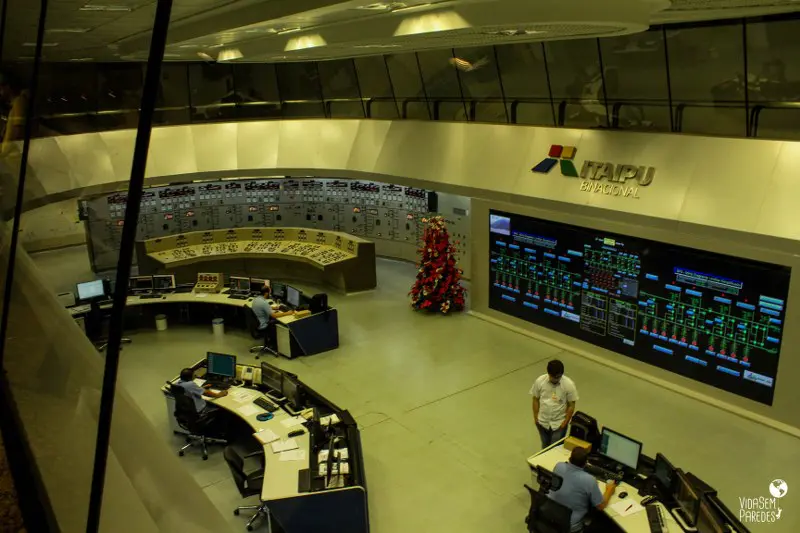

waving_hand Bem-vindo a InovaBusiness
A InovaBusiness tem como objetivo ligar estudantes interessados em inovação, tecnologia e desenvolvimento, com empresas do ramo industrial que estejam em busca de novas ideias.
Temos como objetivo principal, projetos que possam solucionar questões abordadas no ODS 9, contribuindo para um desenvolvimento mais sustentável, e possibilitando uma melhor infraestrutura industrial do país.
Algumas das vantagens que o inventor pode ter usando a nossa plataforma são:
- Acesso direto a empresas interessadas;
- Possibilidade de novas conexões pessoais;
- Aprimoramento de habilidades técnicas;
- Tornar real uma ideia inovadora;
- Possibilidade de empreender.
energy ODS 9 - Indústria, inovação e infraestrutura

Objetivo 9. Construir infraestruturas resilientes, promover a industrialização inclusiva e sustentável e fomentar a inovação.
-
Principais tópicos para atingir esse objetivo:
- Até 2030, modernizar a infraestrutura e reabilitar as indústrias para torná-las sustentáveis, com eficiência aumentada no uso de recursos e maior adoção de tecnologias e processos industriais limpos e ambientalmente corretos; com todos os países atuando de acordo com suas respectivas capacidades;
- Fortalecer a pesquisa científica, melhorar as capacidades tecnológicas de setores industriais em todos os países, particularmente os países em desenvolvimento, inclusive, até 2030, incentivando a inovação e aumentando substancialmente o número de trabalhadores de pesquisa e desenvolvimento por milhão de pessoas e os gastos público e privado em pesquisa e desenvolvimento;
- Aumentar significativamente o acesso às tecnologias de informação e comunicação e se empenhar para oferecer acesso universal e a preços acessíveis à internet nos países menos desenvolvidos, até 2020.


Para saber mais, visite Site dos ODS
cognition_2 Uma ideia inspiradora: Lasse - Itaipu Binacional
O Laboratório de Automação e Simulação de Sistemas Elétricos (Lasse) é uma instalação de pesquisa multidisciplinar localizada no Parque Tecnológico Itaipu, dedicada a testes e verificação de desempenho de equipamentos e sistemas elétricos. Com a missão de prover autossuficiência tecnológica à Itaipu Binacional e apoiar sua atualização tecnológica, o Lasse desenvolve soluções de hardware e software para a usina e outras empresas do setor elétrico desde 2008, fomentando a colaboração entre empresas, institutos de pesquisa e universidades.
As atividades do Lasse contribuem para a Meta 9.5 por meio do fortalecimento da pesquisa científica, da melhoria das capacidades tecnológicas e do incentivo à inovação e aos investimentos em pesquisa e desenvolvimento, tanto públicos quanto privados.
cognition Envie sua proposta
Caso você tenha uma ideia que contribua com o desenvolvimento do objetivo alvo, deposite a mesma na InovaBusiness, e aguarde alguma empresa parceira entrar em contato.

Clique no link a seguir para depositar sua ideia: Deposite sua ideia, ou clique para Voltar ao topo.